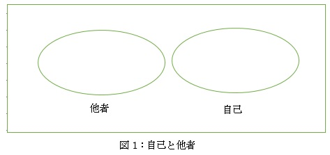
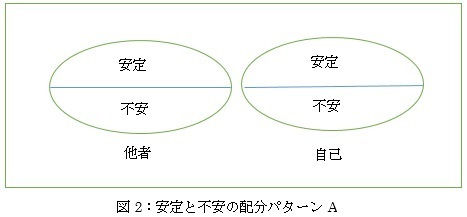
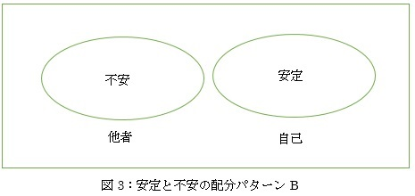

| popecchiの心理学 | |
| popecchi | |
| popecchi shuppan (2015) | |
popecch i の心理学 < 簡易 版 >
目次
序文は省きます。早速本題に入りましょう。
簡単に言ってしまうと、人間の心 は4 つの概念で捕捉できると思います 。4 つの概念とは、自己、他者、安定、不安 の4 つです。
人間の心は自己と他者を認識します。図にすると以下のようになります。

また、人間の心は安定（安心と言ってもいい）と不安を感じ、この安定と不安が自己と他者に配分されます。
配分 の1 つのパターンは以下のようなものです。

別のパターンは次のようなものです。

パター ンA では、安定と不安が自己と他者の両方に配分されており、その結果、自己と他者は同等なものと認識されます。良好な友だち関係がパター ンA の具体例になると思います。
一方、パター ンB では、安定が自己に配分され、不安が他者に配分されています。この結果、自己と他者は異質なものと認識され、自己と他者の間に序列が設定されます。パター ンB の具体例としては、支配・被支配関係があげられると思います。
上記から明らかになる重要なことは、人間関係のすべてが支配・被支配から成り立っているのではなく、支配・被支配にもとづかない人間関係もたしかに存在するということです。そしてこ の2 種類の人間関係は、自己、他者、安定、不安 の4 つの概念を用いることで明確に区別することができるということです。
パター ンA のような精神状態を「不安対処の精神 （ Handling-of-Anxiety Min d、 H A マインド）」、パター ンB のような精神状態を「不安否定の精神 （ Denial-of-Anxiety Min d、 D A マインド）」と私は呼んでいます。
注目すべきなのは、安定のみが配分される自己（完全な安定としての自己 、 Self with Perfect Stabilit y、 P S 自己）の存在です。究極的に は P S 自己が存在しているかどうかで精神 が2 つに分類できると思います。つまり 、 P S 自己を内包する精神 と P S 自己を内包しない精神 の2 つにです。
P S 自己を内包す る D A マインドの例はたくさん挙げられますが、ここで は1 つだけ挙げておきましょう。（ 注1 ）
アフガン人の反乱鎮圧に出動した英インド空軍司令部は、戦争の規制について意見を求められた時に「文明化された戦争のルールに合わない野蛮な種族に対しては」国際法のルールは適用されない、「とくに女性の価値が低いので、アフガン女性を殺すことはヨーロッパ文明国での同種の行為と比較できない」と答えたという （ 192 2 年）。（ 注2 ）
上記の例では、自己＝イギリス人、他者＝アフガン人であり、自己の側に安定が配分され、他者の側に不安が配分され、アフガン女性は不安にさらされるべき存在として認識されています。
不安対処の精神においては、安定と不安が自己に配分されます。これは言いかえると「自己の側に不安を受け入れる」ということですが、それはつまり、自分は何かしらの点で無知であり、無能であり、弱者であるということを認めるということです。自分が有限の存在であることを認める、という言い方もできると思います。私はこのような自己を 、 P S 自己に対置するものとして「有限な安定としての自己 （ Self with Limited Stabilit y、 L S 自己）」と呼んでいます。
この世界には、「自分さえよければいい」「自分たちさえよければいい」という思想があり、これは不安否定の精神によって支えられているのだと思います。一方で、「この世界には自分たちだけでなく他の人たちもいてその人たちも大事である」という思想があり、これは不安対処の精神によって支えられているのだと思います。
マックス・ヴェーバーは、権力と支配を以下のように定義しています。
「権力」とは、或る社会的関係の内部で抵抗を排してまで自己の意志を貫徹するすべての可能性を意味し、この可能性が何に基づくかは問うところではない。
「支配」とは、或る内容の命令を下した場合、特定の人々の服従が得られる可能性を指す。（ 注3 ）
しかし、私は上記の定義では権力と支配を定義できたことにならないと思います。不安対処の精神と不安否定の精神という心の構造についての観点が抜け落ちているからです。ただ、本冊子は簡易版ですので、この問題についてここでさらに検討することは差し控えておこうと思います。
この小冊子の終わりに、不安対処の精神、不安否定の精神につい て1 つ付けくわえておこうと思います。不安対処の精神は、自己と他者を同等なものとしてとらえ、「この世界には自分たちだけでなく他の人たちもいてその人たちも大事である」という思想を生み出すので、この精神 （ H A マインド）は個人的にも社会的にも安定と平和をもたらす可能性が高いと思います。
ただ 、 H A マインドを自分の精神態度として選んだとしても、これを精神力だけで維持し続けるのは難しいと思います。安定的に生活の糧を確保できなければ、人はストレスにさらされ、（安定が失われるほどに）不安を覚え、その不安を打ち消すために、誰かを傷つけたり支配したり、あるいは酒やドラッグや性的行為などにおぼれたりして 、 P S 自己を築こうとします。その結果 、 H A マインドは失われ 、 D A マインドが形成されます。こ の D A マインドがさらに問題を生み出していきます。
H A マインドを広く社会において醸成するためには、多くの人々が安定的に生活の糧を確保できるようなシステムを社会の中に構築する必要があります。
最後まで読んでいただいてありがとうございました。
注1 ：私 の YouTub e のページ （ https://www.youtube.com/user/popecch i ）に も P S 自己に関連する情報が見つかると思いますので、英語のわかる方は良かったら覗いてみてください。
注2 ：荒井信一『空爆の歴史』岩波新 書 p1 7、 2008
注3 ：マックス・ヴェーバー『社会学の根本概念』岩波文 庫 p8 6、 1972